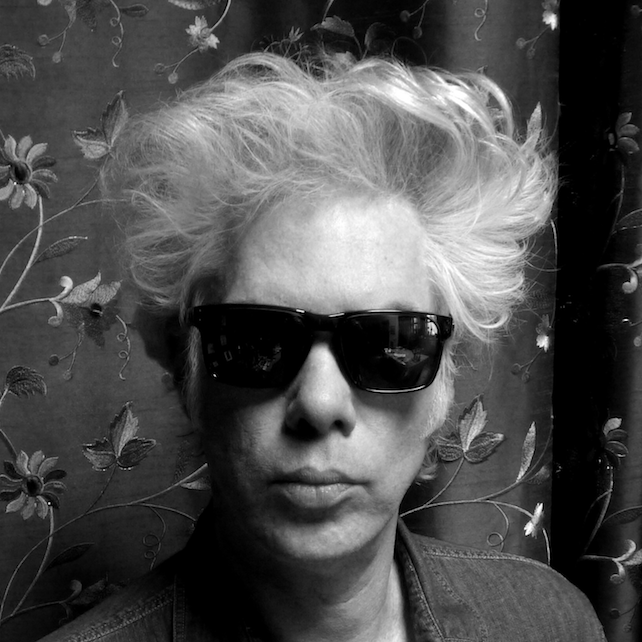

Jim Jarmusch on not wasting time

Filmmaker, Artist
I didn’t use to. I used to only do one thing at a time, but in the last 10 years I’ve really changed dramatically and now I do a lot of things at the same time. I don’t know, something changed in me. I guess I realized how fast life was going by. When I don’t have the pressure of a specific plan, I just do a lot of things. Whereas if I have a plan, sometimes it’s kind of daunting to take on other stuff. I’m also coming up on that dreaded period of time that involves me getting financing together for a new film. That’s not very pleasant. Also, I don’t really enjoy promoting films once they’re done. I just want to go on and make something new. I need to have something else creative to work on. I like to work on things. I don’t like to waste time.
You have a history of working with musicians in your films, but did you always make music as well? Did you play music when you were a kid?No, I didn’t. I tried to learn to play the trombone when I was a kid, but I didn’t really make music. We had a small piano in our house for a while and I would always play around, but I never took any lessons. It wasn’t until my early 20s when I started making music, when it seemed like everyone else was making music, too. There used to be flyers up in the East Village at a certain point in the late ’70s that said, “Everyone here is in a band.” It was kind of true. I made a lot of music in that period, and then it stopped for quite a while, like 20 years. I don’t really know why. I got consumed by filmmaking. Maybe 10 or 12 years ago I realized that I really needed to have some musical projects again. Since then, I’ve been making music a lot. It’s a nice change of pace for me. When you make a film and you’re shooting and you have all these amazing people you’re collaborating with, it’s kind of like you’re on a pirate ship with a lot of people. When you’re playing music it’s like you’re in a little row boat with just a couple of other people. It’s simpler.
Why do you think filmmaking won out in the end?
Making films became an obsessive thing for me. I put all my energy into it for a couple of decades there, but I also continued to write and make some art and take photographs. I still do a lot of different things. Having a lot of musical projects and some art and writing projects, I just feel much better.
I love filmmaking because it contains all these other forms within it. All of them, basically. Music and photography and composition and acting and writing and style and form. It relates to almost every other form of human expression, even architecture to some degree. It has all those things in it, which is part of the reason that I ultimately gravitated towards it. It’s important that filmmakers have varied interests. Really interesting filmmakers are kind of dilettantes by necessity. I consider myself a dilettante, not in a negative way, but because I have interests in a lot of different things and I want to try and do them. I’m not necessarily a master of anything.
When people think of you first and foremost as a filmmaker, does it make it a challenge to also be seen and taken seriously as a musician?
Yeah, it’s hard because you’re dealing with people’s perception of you, which can be very limited. The mass audience can be very closed-minded. People are surprised to learn that, for example, Johnny Depp was a musician first and then and actor. Now when he plays music, it’s like “Oh, that’s an actor playing music.” But, in fact, it’s more like when he’s acting, it’s a musician who’s acting. I try to be very careful not to have my mind closed and think of people as just one thing.
Does playing music engage a different part of your brain than working on a film or making visual art?
Oh yeah. It’s so immediate and it’s really its own language. It feels like a totally immediate form of communicating and interacting. I don’t read music, so I’m not playing in a rigorous classical idiom where I’m interpreting something that has been precisely written, but even in that case, the way a violinist plays a certain piece of music will vary depending on the person. There is part of themselves in their technique or their expression. I used to be so jealous of musicians. You know, 20 years ago I’d be working on a film for like two years and then I’d be hanging out with somebody like Tom Waits. He sits down at the piano and plays some beautiful thing and it just evaporates right into the air—there it was and now it’s gone. It was like wow, that’s incredible. It happens right there in the moment.
Meanwhile, I’m laboring over this film for months and months. By the time it’s done and I’m out promoting it, I’m not even the same person that I was back when I started it. People ask, “What does this film mean?” I don’t even know. I don’t even remember. I’m already thinking of something new. There’s just something so magic about music. I think about seeing audiences singing along to music even when it’s in a language that they don’t speak or understand. I find it especially funny with hip-hop, to see Romanians chanting along with Eric B. & Rakim tracks. Do they even know what they’re saying? But in way they don’t have to, because they’re receiving the feeling so strongly. Even if they don’t know what the lyrics mean, they are still getting it somehow. Music can do that.
In recent years you have created the music for your own films. It must be satisfying to also be able to control that aspect of your work.
Well, it was kind of accidental. When we were making a film called The Limits of Control, I was piecing the score together with existing music, and I just couldn’t find anything that worked for these sequences where a guy goes into art museums, looks at one painting, and leaves. Around that time I’d done some other music stuff. Jack White had asked me to do a remix of a White Stripes song called “Blue Orchid.” And the editor I was working with on the film said, “Why don’t you try to make some music for these sections on your own?” We had nothing to lose, so we did it and it worked really well. It’s a bit daunting when I know so many incredible musicians and I’ve worked with people like RZA and Neil Young and Tom Waits. Originally I was like, “Well, why would I even think of doing it myself when I know all these amazing people?” But by circumstance, it was kind of necessary for those films. Now we’ve continued doing it.
Not knocking the film world, but it must also be kind of nice to have these creative projects that have nothing at all to do with that world.
It really is. It’s gotten strange, that world, especially with financing films. It’s so different now than it used to be. I’ve had great people to help me make my films, so I’m not dissing them, but there’s almost a feeling like you should get on your knees and thank the financiers for just letting you make a film. It’s like… wait a minute, I’m bringing you this script and these actors, do I really have to get down on my knees and thank you for not paying me for it? It’s not quite that bad for me, but it’s changed a lot. I have some friends that are just finishing a documentary film and the financiers looked at their budget and said, “Hang on, you as the director expect to be paid also?” Even though it was a meager $25,000 for four years of work or something. It’s like wow, man, really? So yes, it is nice to get a break from all of that nonsense.
Dennis Hopper once said in some interview, something like, “You know, making a film is really hard and it’s just as hard to make a bad film as it is to make a good film. It’s just fucking hard.” It’s true. It’s difficult, making a film. It’s not an easy thing. It takes a lot out of you. You really have to be strong. Wernor Herzog is always saying, “You must be an athlete to make it through, physically,” and all this kind of stuff. And it’s true. Everyone has their own approach, but making movies really does require a lot of energy, focus, and concentration. It’s not an easy thing to do, but it’s so fulfilling for me, because it has all those other art forms mixed into it. It’s such a joyous form for me. I just love it. I’m a film geek, so I’ve been absorbing films since I was a child, kind of like a maniac, but I also absorb music and books and other things like a maniac. But I just love movies so much, in the end that’s always what I’ll come back to.
Of course there are lots of artists who single-mindedly do just one thing, but it seems healthy to have multiple creative outlets. It relieves some of the pressure.
I think that’s true. You know, everyone is different and everyone has to find a way of working that suits them, but it feels good to be able try out different things. I’m not a professional filmmaker. I adamantly say I’m an amateur filmmaker, partly because the origin of the word amateur means “the love of a form” and professional means “I do this for money.” So I am an amateur filmmaker because I love the form. I don’t want to use the word “artist” for myself. Instead I’ll just say that I am a person whose job really is taking in a lot of things that inspire me and then somehow creating things that come back out of me. There are other people who seem to have a similar feeling. David Lynch, for example. He makes music. He’s a painter. He does a number of things. There are quite a lot of filmmakers who have varied forms of expression. Some people require various outlets and some people just need one. They’re like single-celled creature creators—they have this one thing that they’re going to do. I respect that. I was like that for quite a while with just doing films, but I realized eventually that my real job is a bit broader than that.
You mentioned earlier that growing older has given you an increased sense of urgency about making things. What do think that’s all about?
I really feel that. I haven’t analyzed it too much but it’s just the feeling that, as you get older, time really does start to go by faster and faster. There are still a lot of things I want to be able to do. Things I want to try. I have two book projects up my sleeve that I want to work on. I don’t really want to jinx them by talking too much about it, but I have two of those. I’ve written poetry since the 1970s. I don’t really share it much but I do have stuff I would maybe consider publishing. I’m not sure. I make newsprint collages and I now have a backlog of almost maybe 300 of them, so I want to do a book of those and then show them somewhere. I’ve shown a few of them before, but I want to do more. So I have those projects and then also more musical projects in the works.
I’ve worked really hard to set up my little creative laboratory up here in the Catskills, so now I have a separate building from my house that has an art/music room and another room that will be a kind of screening room. I’m set up to do my art, to write, to read, to take in films, and to make music, either by myself or with other people. I’m like well, don’t stop now. Now’s the time to make more music and do more stuff. I’m very happy that way. I feel good about it. Don’t wait. Don’t waste time. Do it.
- Recommended by Jim Jarmusch:
- Film: Touki Bouki, (1973) Djibril Diop Mambety
- Music: Hive1, (2015) Tyondai Braxton
- Artwork: White Scroll with Dancing Figures, (2008) June Leaf
- Book: Song from the Forest: My Life Among the Ba-Benjelle Pygmies (1993) Louis Sarno
- Radio Crime Drama: Broadway is My Beat (1949-54)
Essential Jim Jarmusch: • Permanent Vacation (1980) • Stranger Than Paradise (1984) • Down by Law (1986) • Mystery Train (1989) • Night on Earth (1991) • Dead Man (1995) • Year of the Horse (1997) • Ghost Dog: The Way of the Samurai (1999) • Coffee and Cigarettes (2004) • Broken Flowers (2005) • The Limits of Control (2009) • Only Lovers Left Alive (2013) • Paterson (2016) • Gimme Danger (2016) • SQÜRL - “The Dark Rift” (2017)